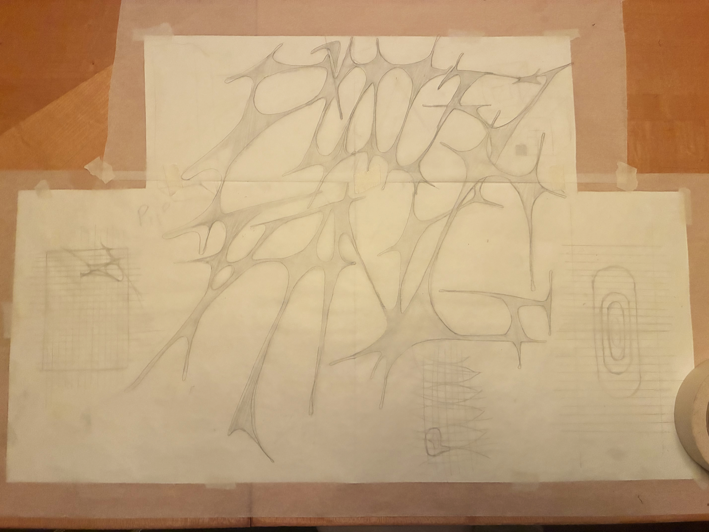

The main cosmogram I developed is 2’ 4” x 1’ 7”. Produced on mixed media paper, the diagram was composed with watercolors, various colored pens, stamps, tea leaves, sewing thread, glitter finish and trace paper (barely visible). The main cosmogram diagram can be read from any direction (up down/ left right/ forward backward) and works at two scales. The cosmic scale and the much smaller interactable human scale. This diagram is a depiction of the crosszone between the line of being and the line of life which produces the world or reality as we know it. Being exists on one side of the page, marked by bright colors and glitter. The other, life, depicted by more earth tone browns and grays. The pink green spotting that occurs across the entire paper is this energetic field that works as a connective tissue amongst being, life and reality. One can image this field reacting in the same reflexive ways chromatophores in chameleon skin cells do. This energetic field is a conduit fluid for the threads/essences of life and being that “swim” through it. These threads are the red and black lines that wrap around the conduit spots. They easily navigate into and out of reality.
The bounds of reality are depicted in the middle of the page by a thin rectangular black line. Within this box are mini stick figures. In the center one is green and the others are black. The green person represents “you”, this encompassing, but not limited to, your personality, family, friends, coworkers, enemies etc. This is a minimum of ~200 people, all influential factors producing “you”. The black stick figures represent ~2000 people around you/your external environment across miles. The red thread sewn between “you” and “everyone else” is the naturally occurring energetic exchange (Ref: the d.sync diagram ). Around “the world” are arrow clouds signifying the movement of circulating thought which produces narratives that constitutes reality. Backward time thinking is nostalgia, memorial, remembrance, grief, historical framing etc. Forward time thinking is hope, Deja vu, clairvoyance, premonitions, intuition etc. These clouds can be understood as “conflict”: an external event (simply a happening not necessarily major) that comes from the collecting of smaller internal/unsee energetic percolations. (Ref: cloud diagram).
Oree's Storees © 2026 is licensed under CC BY-NC-SA 4.0



[EXTRA!: A recent (as of Oct '26) hand draft of the words "P'ooty Tang". I had been wanting to do some drafting, but didn't know what. Then one day I woke up with these words in my mind, so I just did this freehand, played around with it for a bit and now I am giving to my bestie lol. I told my friends that I was drafting the word "P'ooty Tang" to which they informed me that P'ootie Tang" is a movie. They said this movie made disturbed them. It looks like an "Undercover Brother"/ blaxplotaiton parody type of movie (which I liked Undercover Brother), but there's some names credited to "P'ootie Tang" that I find suspicious. I want to get high and watch it with someone or a group of people tho lol. I don't really watch tv shows, but I love movies!]